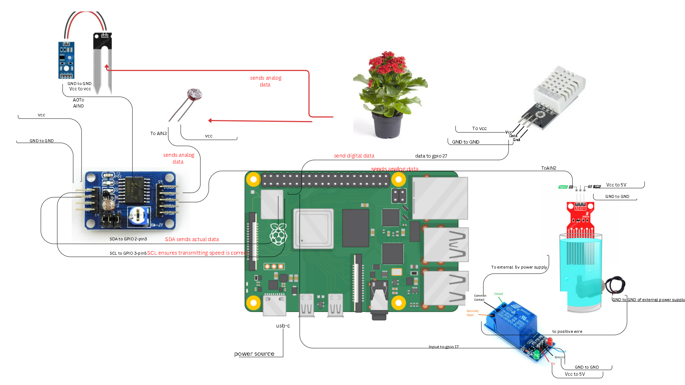
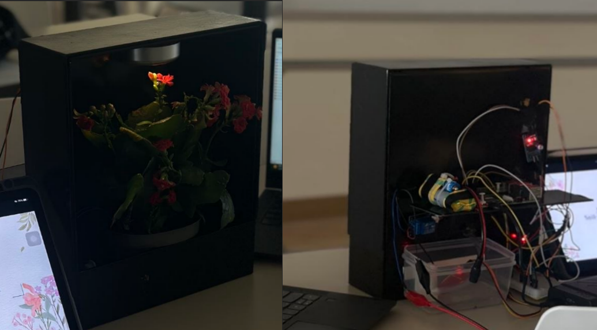
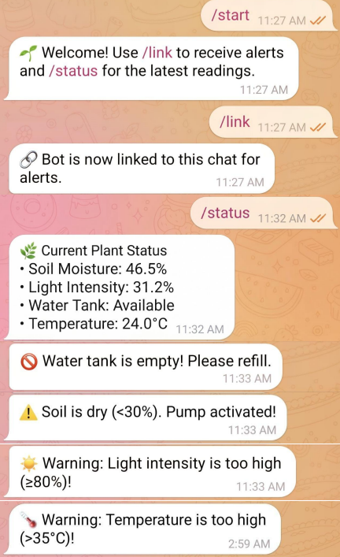

An intelligent IoT monitoring system for soil moisture, temperature, and light intensity equipped with edge computing logic for autonomous decision-making.
Managing a diverse collection of indoor houseplants is frequently challenged by fluctuating room environments, precise humidity requirements, and the difficulty of maintaining consistent care schedules. Traditional plant care generally relies on manual observations and guesswork, which inevitably leads to inconsistent soil moisture and declining health for sensitive plant varieties.
FloraSense was engineered as an IoT-based smart monitoring system that leverages real-time sensor data, automated irrigation, and direct mobile alerts to optimize the health of indoor plants. Acting as the "brain" of the system, a Raspberry Pi 4 processes analog and digital sensor data locally. The system uses threshold-based edge logic to automate physical components, such as triggering a water pump when the soil becomes dry, and communicates with a Telegram bot via WiFi to keep plant owners informed in real time.
/status command to the bot at any time to retrieve a single message containing all current sensor readings.The architecture is centralized around a Raspberry Pi 4. Analog sensors (Soil Moisture, Light, and Water Level) transmit data through a PCF8591 ADC using the I2C protocol. Digital components, specifically the DHT22 temperature sensor and the 5V water pump relay, are connected directly to the Raspberry Pi GPIO pins.

Physical implementation of the indoor monitoring system showcasing the raw hardware integration, alongside the real-time Telegram bot alerts.

Working hardware setup: Sensor integration & automated pump

Live notifications and interactive command responses via Telegram
View the Python scripts, edge computing logic, and Bot integration on my GitHub repository.
View on GitHub ↗